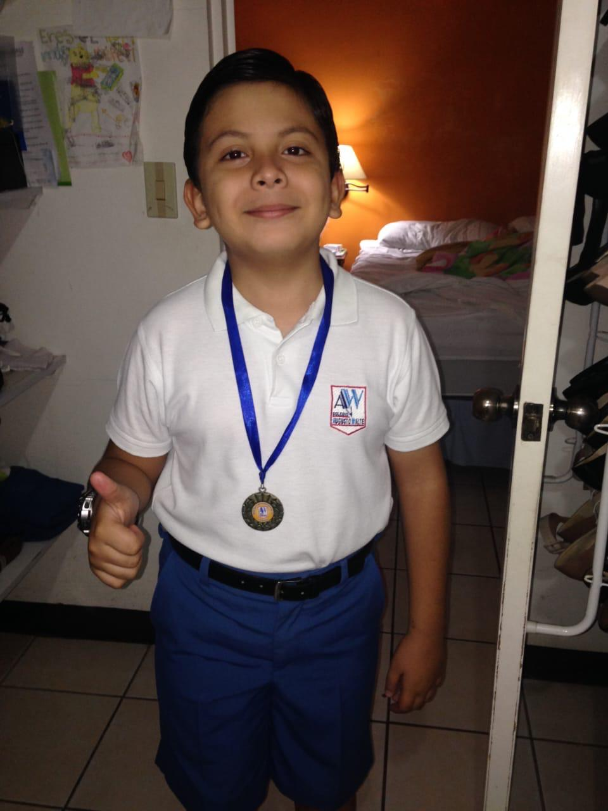

Sobre mí

Hola, mi nombre es Fernando Calvo y para 2026 tengo 21 años de edad. Estoy cursando la carrera de Ingeniería en Software y Negocios Digitales en la ESEN y voy por el segundo año.
Desde que tengo memoria siempre me ha gustado todo lo relacionado con la tecnología. Mi sueño es poder crear máquinas o robots funcionales, tanto para uso corporativo como para venta comercial.
Mi formación

Me gradué del Colegio Maya y actualmente estudio en la ESEN. Considero que esta carrera es el primer paso de muchos objetivos académicos que quiero alcanzar en el futuro.
Mis gustos
- Color favorito: Negro.
- Serie favorita: Black Clover.
- Tecnología y robótica.
- Programación y desarrollo de software.
Enlaces
Algunos sitios que me gustan: